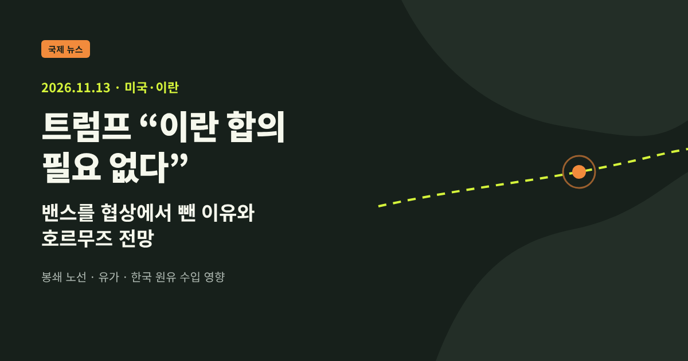
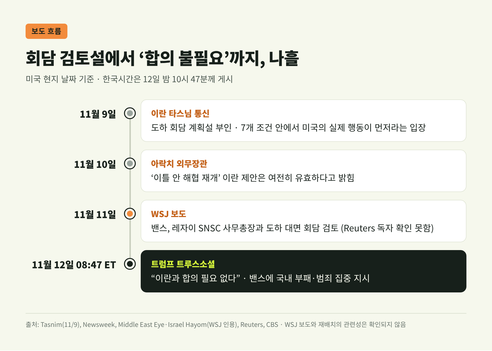
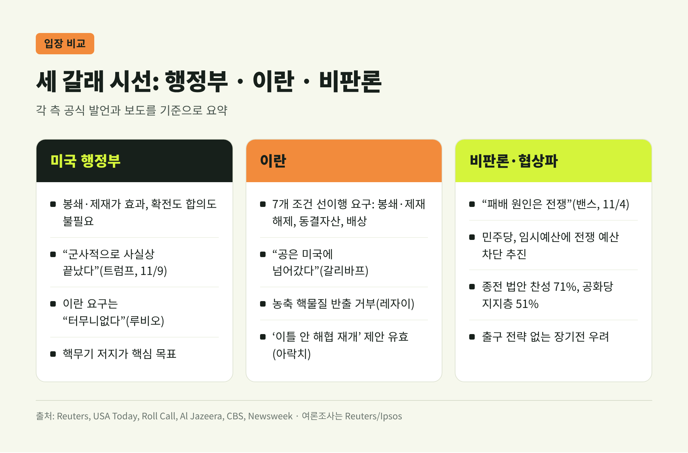
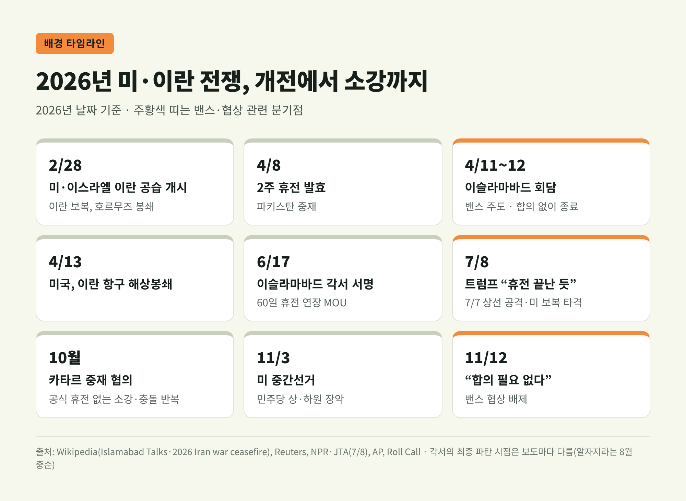
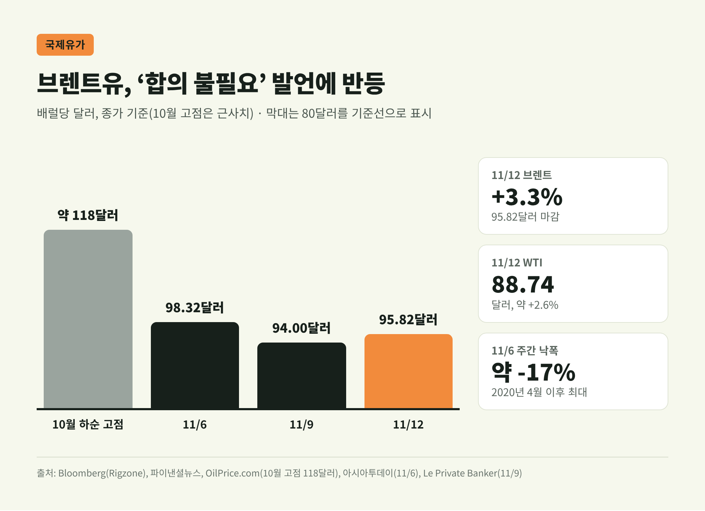
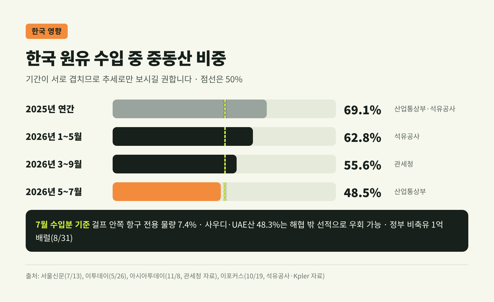
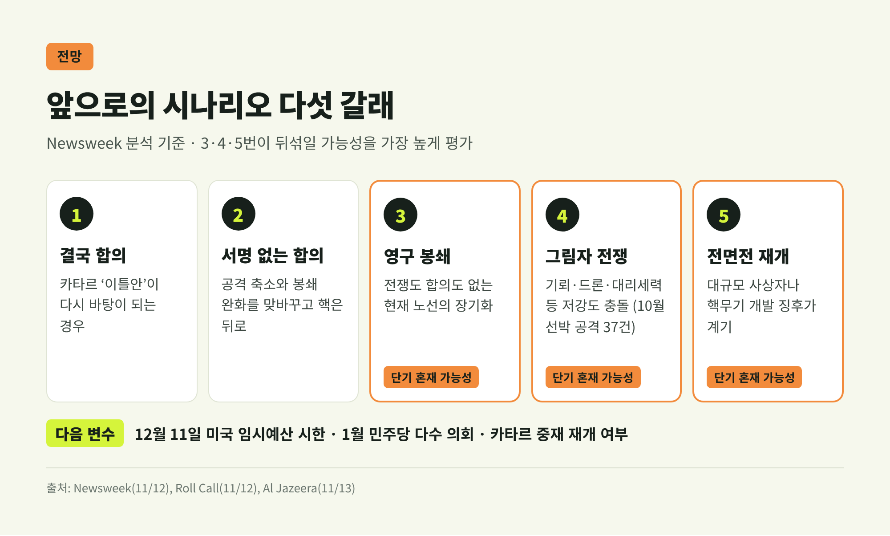

트럼프 "이란 합의 필요 없다"…밴스를 협상에서 뺀 이유와 호르무즈 전망
이번 글에서는 트럼프 미국 대통령이 JD 밴스 부통령을 이란 협상에서 빼고 "합의는 필요 없다"고 밝힌 일을 정리합니다. 같은 주에 밴스가 이란 안보 책임자와 회담을 검토한다는 보도도 나와 흐름이 엇갈렸습니다. 시간 순서부터 짚고, 왜 이런 결정이 나왔는지와 유가·한국에 미칠 영향, 앞으로의 시나리오까지 살펴보겠습니다.
세 줄 요약
- 11월 12일(미국 동부시간 오전 8시 47분, 한국시간 같은 날 밤) 트럼프는 트루스소셜에 "이란과 합의가 필요 없다"고 쓰고, 밴스에게 민주당 집권 지역의 부패·범죄 문제에 집중하라고 지시했습니다.
- 하루 전인 11일에는 밴스가 이란 최고국가안보회의(SNSC) 모흐센 레자이 사무총장과 도하 회담을 검토한다는 WSJ 보도가 있었습니다. 이란은 그 전후로 회담 계획이 없다고 부인했습니다.
- 같은 날 브렌트유는 3.3% 올라 배럴당 95.82달러로 마감했습니다. 미국은 '전쟁도 합의도 없는' 봉쇄 노선으로 기우는 모습이고, 중동 원유 의존도가 여전히 절반 안팎인 한국도 영향권에 있습니다.

■ 무슨 일이 있었나: 게시물 한 건이 바꾼 협상 구도
발단은 트럼프 대통령의 짧은 게시물입니다. 그는 "We don't need a deal with Iran"이라고 쓰고, "그런 시절은 이미 오래전에 지났다"고 덧붙였습니다. 미국이 이란의 돈 "수천억 달러"와 "해협"을 쥐고 있다는 주장도 함께 실었습니다. 여기서 해협은 호르무즈 해협을 가리킵니다. (Reuters, USA Today, Roll Call)
같은 글에서 밴스 부통령에게 새 지시를 내렸습니다. 민주당이 이끄는 도시와 주의 부패·범죄 문제에 "온전한 관심"을 쏟으라는 내용입니다. 트럼프가 예전에 맡겼던 국내 부정 추적 업무로 돌아가라는 뜻이고, 이 문제만 바로잡아도 예산 균형을 맞출 수 있다고 주장했습니다. (Reuters) 밴스는 남미·카리브해 순방 일정을 취소한 것으로 전해졌습니다. (The Week)
다만 '협상 중단'을 공식 선언한 것은 아닙니다. WSJ는 트럼프가 협상을 끝낸다고 명시하지는 않았다고 짚었습니다. 반면 Roll Call은 사실상 협상을 접은 것으로 평가했습니다. 부통령실은 Reuters의 논평 요청에 곧바로 답하지 않았습니다.

■ 엇갈린 보도, 시간 순서로 다시 보면
혼란스러웠던 지점은 회담설입니다. 11월 11일 WSJ는 밴스가 레자이 SNSC 사무총장과 카타르 도하에서 마주 앉는 방안을 검토한다고 보도했습니다. 미국·중동 관리들을 인용한 보도였고, Reuters는 이를 독자적으로 확인하지 못했습니다. 트럼프의 게시물은 그다음 날 나왔습니다.
이란 쪽은 처음부터 선을 그었습니다. 9일 타스님 통신은 안보 관계자를 인용해 도하 회담 계획이 없다고 전했습니다. 이란이 내건 '7개 조건' 안에서 미국이 실제 행동을 보이기 전에는 협상도 없다는 입장이었습니다. 아락치 외무장관도 회담 보도를 "전혀 근거 없다"고 일축했습니다. (Tehran Times)
밴스의 물밑 움직임은 그보다 앞서 있었습니다. 10월 하순 이란 국영매체는 밴스가 협상 재개를 원하는 서한을 보냈다고 보도했습니다. 트럼프는 자신이 지시한 일이 아니라고 했습니다. (Reuters) WSJ 보도와 이번 재배치가 직접 관련이 있는지는 확인되지 않았습니다. (USA Today)
■ 왜 협상 창구를 닫았나: 행정부의 논리
트럼프의 설명은 일관됩니다. 해상봉쇄와 제재가 효과를 내고 있으니 확전도, 합의도 필요 없다는 것입니다. 9일에는 이란이 군사적으로 "사실상 끝났다"며 "현 상태를 유지할 뿐"이라고 말했습니다. (USA Today, Roll Call) 11월 6일 녹화된 인터뷰에서는 미군이 호르무즈 선박 호위를 계속할 수 있고 역내 국가들이 비용을 나눌 것이라고 했습니다.
행정부 안의 강경파도 같은 방향입니다. 루비오 국무장관은 전쟁 배상 등을 포함한 이란의 요구를 "터무니없다"고 했습니다. 경제적 압박이 앞으로 "더 심해질 것"이라고도 했습니다. (Reuters, Al Jazeera) 베선트 재무, 러트닉 상무, 헤그세스 장관도 카타르 중재안 같은 합의에는 부정적인 것으로 알려졌습니다. (Le Private Banker)
걸프국 변수도 있습니다. 트럼프는 12일 한 인터뷰에서 사우디가 "당분간 지금 상태로 두어 달라"고 요청했다고 밝혔습니다. 카타르·쿠웨이트·UAE·바레인도 같은 생각이라고 했습니다. 그러면서도 "동의하는지는 모르겠다"고 했고, 요청이 없었다면 공격했겠느냐는 질문에는 "그렇다"고 답했습니다. (Dawn, Al Jazeera)

■ 선거가 드러낸 균열: 밴스와 트럼프
이번 결정은 11월 3일 중간선거와 떼어 보기 어렵습니다. 민주당은 상·하원을 모두 가져갔습니다. Roll Call은 1월부터 하원 민주당이 250석 이상, 상원은 최소 55석이 될 것으로 집계했습니다.
밴스는 선거 다음 날 X에 "The reason we lost is the war"라고 썼습니다. 패배 원인이 전쟁이라는 뜻입니다. 트럼프도 전쟁으로 오른 기름값이 패배에 영향을 줬다고 인정했습니다. 다만 이란을 공격한 결정 자체는 옳았다고 했습니다. (Roll Call, Al Jazeera) 일부 분석가는 밴스의 발언을 트럼프의 전쟁과 거리를 두려는 시도로 봅니다.
여론과 의회도 압박입니다. Reuters/Ipsos 조사에서 전쟁을 끝내는 법안에 찬성한 비율은 전체 71%, 공화당 지지층에서도 51%였습니다. 상원 민주당은 12월 11일 끝나는 임시예산에 전쟁 예산을 막는 조항을 넣는 방안을 검토하고 있습니다. 공화당 하원 세출위원장은 반대하고 있습니다. (Roll Call) 가디언은 이번 발표가 교착 상태를 '정상'처럼 보이게 하려는 시도라고 해석했습니다. (한국경제 인용)
■ 어떻게 여기까지 왔나: 2월 개전에서 소강까지
배경을 짧게 되짚어 보겠습니다. 미국과 이스라엘은 2월 28일 이란을 공습했고, 이란은 보복 공격과 함께 호르무즈 해협을 막았습니다. 4월 7~8일 파키스탄 중재로 2주 휴전이 시작됐습니다.
4월 11~12일 이슬라마바드 회담은 밴스가 이끌었습니다. 위트코프·쿠슈너 특사가 함께했고, 이란에서는 갈리바프 국회의장과 아락치 장관이 나왔습니다. 이 회담 자체는 합의 없이 끝났습니다. 다음 날 미국은 이란 항구 해상봉쇄를 시작했습니다. 이후 협상이 이어져 6월 17일 양국 정상이 '이슬라마바드 각서'에 원격으로 서명했습니다. 60일 휴전 연장을 담은 14개 항 양해각서입니다.
그 각서는 오래가지 않았습니다. 7월 7일 이란이 호르무즈에서 상선을 공격하자 미국이 보복 타격에 나섰습니다. 트럼프는 8일 "끝난 것 같다"며 휴전 종료를 선언했습니다. (NPR, JTA) 각서가 최종적으로 무너진 시점은 보도마다 다릅니다. 알자지라는 8월 중순으로 적었습니다. 그 뒤로는 공식 휴전 없이 충돌과 소강이 반복됐습니다. 카타르가 중재를 맡아 왔고, 10월 말에는 이란 측과 두 차례 협의도 했습니다. (AP)

■ 이란의 입장: "공은 미국에 있다"
이란은 협상 자체를 거부하지는 않습니다. 다만 조건이 분명합니다. 갈리바프 의장은 카타르를 거쳐 7개 항의 휴전·해협 재개안을 보냈다며 "공은 미국에 넘어갔다"고 했습니다. (Al Jazeera) 조건에는 모든 전선의 적대 행위 중단, 해상봉쇄 해제, 제재 해제와 동결자산 반환, 배상이 들어갑니다. 이란과 오만이 해협 통항을 관리하는 방안도 포함됩니다. (CBS, Al Jazeera)
핵 문제에서는 물러설 기색이 없습니다. 레자이 사무총장은 농축 핵물질을 "단 한 톨도" 내보내지 않겠다고 했습니다. (CBS) 아락치 장관은 '이틀 안에 해협을 다시 연다'는 제안이 여전히 유효하다고 밝혔습니다. 단, 모든 전선에서 전쟁이 끝난다는 조건이 붙습니다.
카타르 중재안의 세부 내용은 보도마다 다릅니다. 한 보도는 미국이 봉쇄를 풀고 카타르에 묶인 이란 자금 80억 달러를 풀어 주는 대신, 이란은 해협을 열고 통행료 요구를 접는 구조라고 전했습니다. 이 안에서는 핵이 빠져 있습니다. Axios를 인용한 Newsweek 보도는 유엔 사찰단의 핵시설 접근이 포함됐다고 썼습니다. 양국 정부는 어느 쪽도 확인하지 않았습니다.
■ 호르무즈와 유가: 주장과 확인 사이
해협은 여전히 위험한데요. 무엇이 확인된 사실인지는 따로 봐야 합니다. 이란은 11월 8일 이후 유조선 여러 척이 기뢰나 폭발로 멈췄다고 잇달아 주장했습니다. 12일에는 경고를 무시한 유조선 4척이 폭발 피해를 입었다고 발표했습니다. (Reuters) CBS는 이런 주장 대부분이 독립적으로 확인되지 않았다고 정리했습니다. 확인된 것은 11일 아랍에미리트 라스알카이마 앞바다에서 상선이 미확인 발사체에 맞은 건 정도입니다. 미군은 주요 항로의 기뢰를 제거했다고 밝혀 이란 주장과 엇갈립니다.
시장은 즉각 반응했습니다. 12일 브렌트유는 3.3% 오른 배럴당 95.82달러, WTI는 88.74달러로 마감했습니다. (Bloomberg, 파이낸셜뉴스) 한 주 전 분위기와는 사뭇 다릅니다. 당시에는 선거 뒤 종전 기대로 브렌트가 한 주에 약 17% 빠졌습니다. 지금은 합의 기대가 꺾이면서 위험 프리미엄이 다시 붙고 있습니다. 10월 하순 고점이 118달러였으니 아직은 그보다 낮은 수준입니다. 사우디의 10월 생산이 하루 1,056만 배럴로 늘어난 점도 상승을 누르는 요인입니다.
UBS의 조반니 스타우노보는 중동산 물량이 늘어난 것은 미군 호위 덕분이라고 봅니다. 호위가 얼마나 이어지느냐가 공급을 좌우한다는 뜻입니다.

■ 한국에는 어떤 의미인가
한국은 이 전쟁 이후 원유 수입선을 빠르게 넓혀 왔습니다. 2025년 69.1%였던 중동산 비중은 관세청 기준 올해 3~9월 55.6%로 내려왔습니다. 5~7월에는 48.5%로 처음 50% 아래로 떨어지기도 했습니다. 빈자리는 미국·캐나다·아프리카산이 채웠습니다. (아시아투데이, 이투데이)
그래도 여전히 절반 안팎은 중동산입니다. 7월 수입분을 보면 걸프 안쪽 항구에서만 실을 수 있는 물량은 7.4%에 그쳤습니다. 사우디·UAE산 48.3%는 해협 밖 항구를 통해 돌아올 수 있었습니다. (이포커스, 석유공사 자료) 걱정은 해협이 아니라 주변 해역 전체로 위험이 번지는 경우입니다. 단순 계산으로 사우디·UAE 물량까지 끊기면 정부 비축유 1억 배럴로 약 60일을 버틸 수 있습니다. 민간 비축과 수요 조정은 빠진 수치입니다.
해운과 비용도 문제입니다. 9월 말 페르시아만~중국 초대형 유조선 용선료는 하루 120만 달러를 넘었습니다. 전쟁 직전에는 23만 달러 수준이었습니다. (글로벌이코노믹, 클락슨리서치) 보험사들은 보험료를 크게 올리거나 인수를 거절하고 있습니다. 해사기관들은 여전히 통항을 자제하라고 권고합니다. (Al Jazeera) 유가가 다시 오르면 정유사 조달 비용과 국내 기름값에 시차를 두고 반영될 수 있습니다. 이번 발언에 대한 우리 정부의 공식 반응은 아직 확인되지 않았습니다.

■ 이스라엘과 걸프국, 서로 다른 계산
이스라엘은 강경한 쪽입니다. AP는 네타냐후 총리가 중간선거 뒤 대이란 공습 재개를 트럼프에게 압박했다고 보도했습니다. 트럼프는 확답하지 않았습니다. 네타냐후 진영은 10월 말 총선에서 과반을 잃었습니다. 이 때문에 전면전이 비상 정부 구성에 유리할 수 있다는 관측도 나옵니다. 이번 게시물에 대한 이스라엘 정부의 공식 반응은 확인되지 않았습니다.
걸프국은 정반대입니다. 확전이 되면 후티의 사우디·홍해 공격과 이라크 민병대 움직임이 뒤따를 수 있다고 경고해 왔습니다. (AP) 채텀하우스의 아니세 바시리 타브리지는 걸프국이 지금 상태를 '새 표준'으로 받아들이지는 않는다고 봅니다. 다만 전쟁 재개보다는 낫다고 여긴다는 분석입니다. (Al Jazeera)
■ 앞으로의 시나리오
Newsweek는 다섯 갈래를 제시했습니다.
- 결국 합의: 트럼프의 단정은 수명이 짧았습니다. 6월 각서도 '완료'라 했다가 몇 주 만에 깨졌습니다. 카타르의 이틀안이 다시 바탕이 될 수 있습니다.
- 서명 없는 합의: 이란은 공격을 줄이고 미국은 봉쇄 단속을 느슨하게 하는 방식입니다. 핵은 뒤로 미룹니다. 퀸시연구소의 트리타 파르시는 봉쇄가 "눈에 띄지 않게 시들 수 있다"고 봤습니다.
- 영구 봉쇄: 지금 트럼프가 택한 것으로 보이는 '전쟁도 합의도 없는' 노선입니다. 이란이 이 상태를 견디느냐가 관건입니다.
- 그림자 전쟁: 기뢰·드론·대리세력을 통한 저강도 충돌입니다. 10월 해협 인근 선박 공격은 최소 37건으로 전쟁 중 월간 최다였습니다.
- 전면전 재개: 대규모 사상자나 핵무기 개발 징후가 계기가 될 수 있습니다. IAEA는 60% 농축 우라늄 약 440.9kg의 행방을 검증하지 못했습니다.
Newsweek는 단기적으로 3·4·5번이 뒤섞일 가능성을 가장 높게 봤습니다. 바시리 타브리지는 '전쟁도 평화도 아닌' 상태가 당분간 이어지다 2주 안팎에 어느 쪽으로든 움직일 것으로 내다봤습니다. 미국 안에서는 12월 11일 임시예산 시한과 1월 민주당 의회가 다음 변수입니다.

정리하면 이렇습니다. 트럼프 행정부는 봉쇄와 제재가 통하고 있다고 보고, 협상파 밴스를 국내 현안으로 돌렸습니다. 이란은 7개 조건을 먼저 받아들이라며 버티고 있고, 해협에서는 확인되지 않은 공격 주장이 쏟아지고 있습니다. 행정부의 계산이 맞을지, 아니면 비판론자들의 경고처럼 출구 없는 장기전이 될지는 아직 판단하기 이릅니다.
이번 결정은 협상의 끝이라기보다 — 누가, 어떤 조건으로 다시 마주 앉을지를 둘러싼 긴 줄다리기의 다음 장에 가깝습니다.
유가와 해운에 기대는 한국으로서는 남의 일이 아닙니다. 다음 소식을 차분히 지켜볼 이유가 충분하다고 생각합니다.
참고한 출처
- Reuters, "Trump says US does not need Iran deal, directs Vance to focus on domestic corruption" (2026-11-12) — https://www.yahoo.com/news/articles/trump-says-vance-focus-domestic-133908907.html
- USA TODAY, "Trump says deal with Iran not needed, pulls Vance off negotiations" (2026-11-12) — https://www.yahoo.com/news/politics/articles/trump-says-deal-iran-not-223633935.html
- CBS News 라이브 업데이트 (2026-11-11~13) — https://cbsnews.com/live-updates/iran-war-us-nuclear-strait-of-hormuz
- Roll Call, "Trump says no Iran deal needed after conflict drove GOP's midterm losses" (2026-11-12) — https://rollcall.com/2026/11/12/trump-vance-iran-deal-midterm-elections/
- Roll Call, "Democrats mulling Iran war funding cutoff strategy" (2026-11-12) — https://rollcall.com/2026/11/12/democrats-mulling-iran-war-funding-cutoff-strategy/
- Al Jazeera, "Why is Trump saying 'no deal necessary' with Iran as he sidelines JD Vance?" (2026-11-13) — https://aljazeera.com/features/2026/11/13/why-is-trump-saying-no-deal-necessary-with-iran-as-he-sidelines-jd-vance
- Newsweek, "Trump Says No Iran Deal: 5 Scenarios for What Happens Next" (2026-11-12) — https://www.newsweek.com/trump-says-no-iran-deal-5-scenarios-for-what-happens-next-12705313
- Bloomberg(Rigzone 전재), "Oil Rises as Trump Dims Iran Deal Hopes" (2026-11-12) — https://www.rigzone.com/news/wire/oil_rises_as_trump_dims_iran_deal_hopes-12-nov-2026-185073-article/
- OilPrice.com (2026-11-12) — https://oilprice.com/Latest-Energy-News/World-News/Brent-Briefly-Hits-94-After-Trump-Says-US-Has-No-Need-for-Iran-Deal.html
- Le Private Banker (2026-11-12) — https://leprivatebanker.com/2026/11/12/oil-jumps-above-94-after-trump-says-us-doesnt-need-an-iran-deal-clouding-a-qatari-plan-to-reopen-hormuz/
- Dawn, "Trump says Gulf allies asked him to hold off on further Iran strikes" (2026-11-13) — https://www.dawn.com/news/2044218/
- Tasnim News Agency (2026-11-09) — https://www.tasnimnews.ir/en/news/2026/11/09/3744673/
- Tehran Times, "Araghchi: No plans for meeting between Vance and Iran's security chief" — https://www.tehrantimes.com/news/532023/
- Middle East Eye (2026-11-12) — https://www.middleeasteye.net/live-blog/live-blog-update/vance-reportedly-considers-direct-talks-irans-top-security-chief-rezaei
- AP(Spectrum News 전재), "Netanyahu pressing Trump to attack Iran after midterms" (2026-11-02) — https://spectrumlocalnews.com/us/snplus/international/2026/11/02/netanyahu-pressing-trump-to-attack-iran-after-midterms-officials-say
- The Week (2026-11-13) — https://www.theweek.in/news/middle-east/2026/11/13/vance-is-reassigned-to-domestic-investigations-as-trump-seeks-to-move-on-from-the-iran-war.html
- NPR (2026-07-08) — https://www.npr.org/2026/07/08/nx-s1-5883929/trump-nato-iran-strikes-press-conference
- JTA (2026-07-08) — https://www.jta.org/2026/07/08/israel/trump-says-iran-ceasefire-over-as-hegseth-cancels-israel-visit-amid-rising-tensions
- Wikipedia, "Islamabad Talks" / "2026 Iran war ceasefire" (2026-11-13 열람) — https://en.wikipedia.org/wiki/Islamabad_Talks
- 파이낸셜뉴스 (2026-11-13) — https://www.fnnews.com/news/202611130634077175
- 한국경제 (2026-11-13) — https://www.hankyung.com/article/2026111357781
- 이투데이 (2026-05-26) — https://www.etoday.co.kr/news/view/2587839
- 서울신문 (2026-07-13) — https://m.seoul.co.kr/news/economy/2026/07/13/20260713500262
- 아시아투데이 (2026-11-08) — https://www.asiatoday.co.kr/kn/view.php?key=20261108010002925
- 이포커스 (2026-10-19) — https://www.e-focus.co.kr/news/articleView.html?idxno=3003095
- 글로벌이코노믹 (2026-10-06) — https://www.g-enews.com/article/Global-Biz/2026/10/2026100523513167019a1f309431_1
#트럼프 #이란협상 #밴스부통령 #호르무즈해협 #국제유가 #미국이란전쟁 #카타르중재 #원유수입